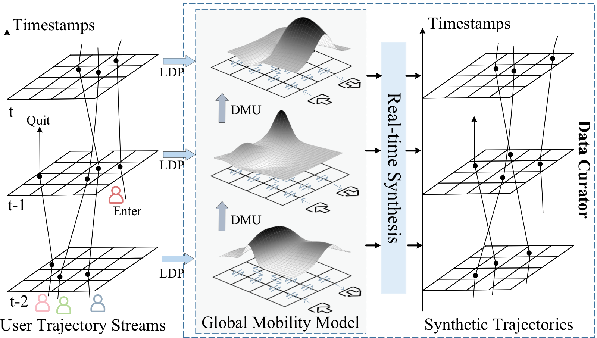

Abstract
Trajectory streams are being generated from location-aware devices, such as smartphones and in-vehicle navigation systems. Due to the sensitive nature of the location data, directly sharing user trajectories suffers from privacy leakage issues. Local differential privacy (LDP), which perturbs sensitive data on the user side before it is shared or analyzed, emerges as a promising solution for private trajectory stream collection and analysis. Unfortunately, existing stream release approaches often neglect the rich spatial-temporal context information within trajectory streams, resulting in suboptimal utility and limited types of downstream applications. To this end, we propose RetraSyn, a novel real-time trajectory synthesis framework, which is able to perform on-the-fly trajectory synthesis based on the mobility patterns privately extracted from users' trajectory streams. Thus, downstream trajectory analysis can be performed on high-utility synthesized data with privacy protection. We also take the genuine behaviors of real-world mobile travelers into consideration, ensuring authenticity and practicality. The key components of RetraSyn include the global mobility model, dynamic mobility update mechanism, real-time synthesis, and adaptive allocation strategy. We conduct extensive experiments on multiple real-world and synthetic trajectory datasets under various location-based utility metrics, encompassing both streaming and historical scenarios. The empirical results demonstrate the superiority and versatility of our proposed framework.
Resources
Citation
@inproceedings{HDZFCZG24,
author = {Yujia Hu and Yuntao Du and Zhikun Zhang and Ziquan Fang and Lu Chen and Kai Zheng and Yunjun Gao},
title = {{Real-Time Trajectory Synthesis with Local Differential Privacy}},
booktitle = {{ICDE}},
publisher = {IEEE},
year = {2024},
}